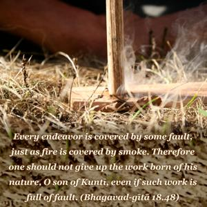
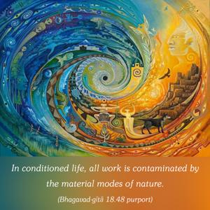
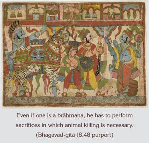

Every endeavor is covered by some fault, just as fire is covered by smoke. Therefore one should not give up the work born of his nature, O son of Kuntī, even if such work is full of fault.



In conditioned life, all work is contaminated by the material modes of nature. Even if one is a brāhmaṇa, he has to perform sacrifices in which animal killing is necessary. Similarly, a kṣatriya, however pious he may be, has to fight enemies. He cannot avoid it. Similarly, a merchant, however pious he may be, must sometimes hide his profit to stay in business, or he may sometimes have to do business on the black market. These things are necessary; one cannot avoid them. Similarly, even though a man is a śūdra serving a bad master, he has to carry out the order of the master, even though it should not be done. Despite these flaws, one should continue to carry out his prescribed duties, for they are born out of his own nature.
A very nice example is given herein. Although fire is pure, still there is smoke. Yet smoke does not make the fire impure. Even though there is smoke in the fire, fire is still considered to be the purest of all elements. If one prefers to give up the work of a kṣatriya and take up the occupation of a brāhmaṇa, he is not assured that in the occupation of a brāhmaṇa there are no unpleasant duties. One may then conclude that in the material world no one can be completely free from the contamination of material nature. This example of fire and smoke is very appropriate in this connection. When in wintertime one takes a stone from the fire, sometimes smoke disturbs the eyes and other parts of the body, but still one must make use of the fire despite disturbing conditions. Similarly, one should not give up his natural occupation because there are some disturbing elements. Rather, one should be determined to serve the Supreme Lord by his occupational duty in Kṛṣṇa consciousness. That is the perfectional point. When a particular type of occupation is performed for the satisfaction of the Supreme Lord, all the defects in that particular occupation are purified. When the results of work are purified, when connected with devotional service, one becomes perfect in seeing the self within, and that is self-realization.